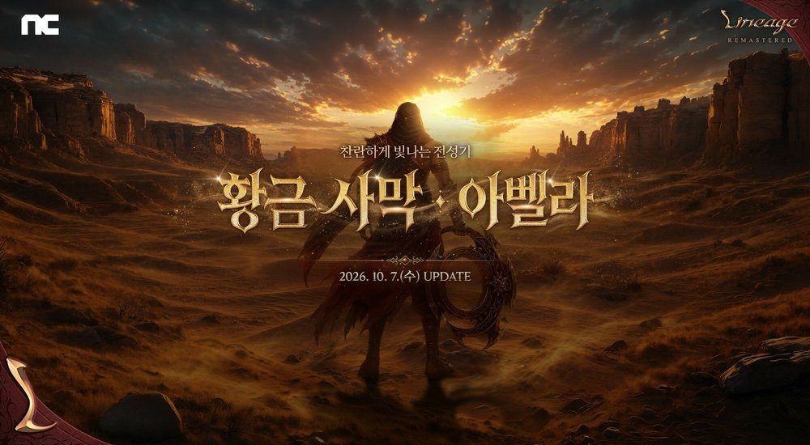
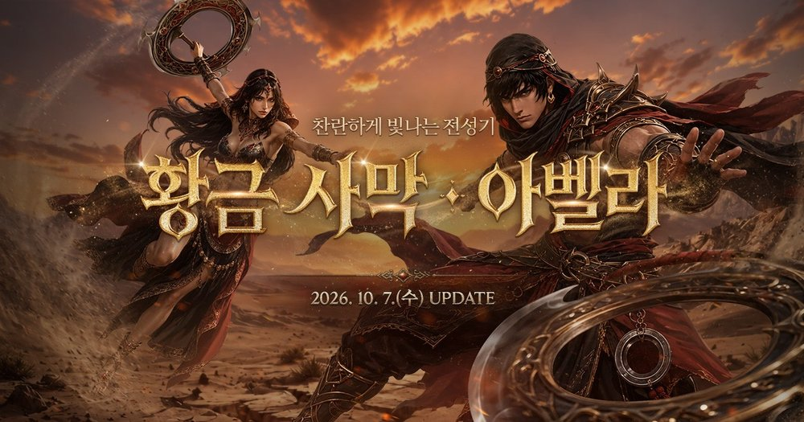
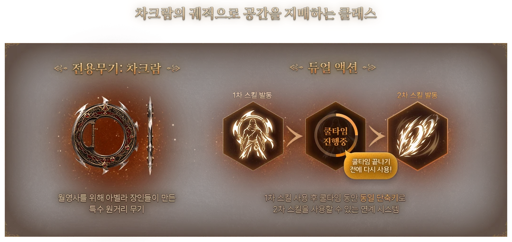
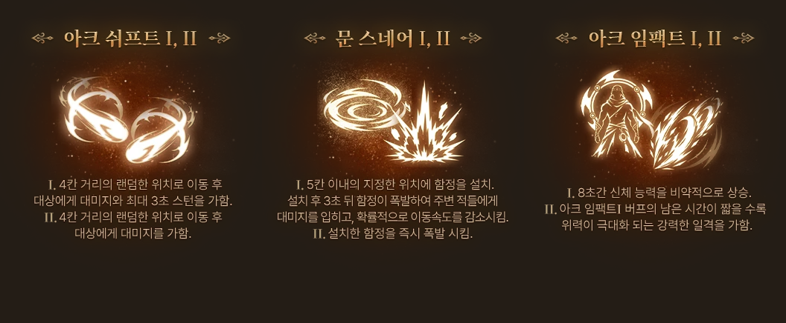
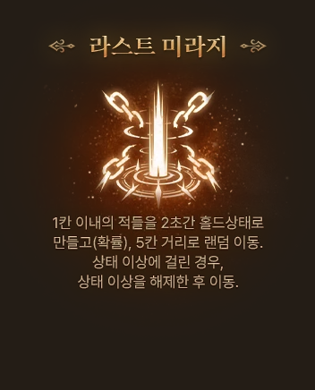
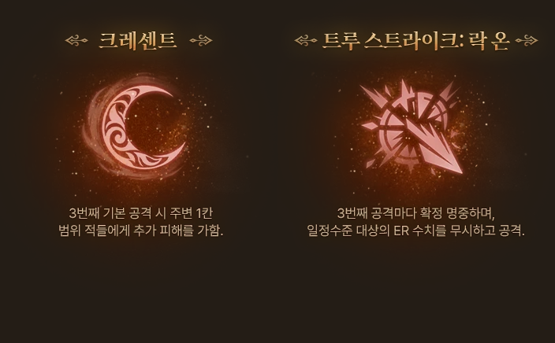

리니지 리마스터 월영사 듀얼 액션 시스템, 아크 쉬프트 문 스네어까지
월영사 소개를 읽다가 '스킬 하나를 1차와 2차로 나눠 쓴다'는 대목에서 눈이 멈췄는데요, 리니지 리마스터에 10월 7일 들어온 신규 클래스 월영사의 '듀얼 액션 시스템'이 어떤 방식인지, 대표 기술은 뭔지 풀어봤어요. 제가 직접 키워 본 건 아니라서 공식 안내와 인벤 보도, 스킬 카드에 적힌 내용 위주로 정리했어요.

월영사는 어떤 클래스인가요
월영사는 10월 7일 '황금 사막 : 아벨라' 업데이트로 들어온 원거리 클래스예요. 공식 안내를 보면 전용 무기는 신규 '차크람'이고 가죽 계열 방어구와 가더를 착용하며, 적중 종류는 공포 적중이고 메인 스탯은 DEX인 원거리 격수예요. DEX가 오를수록 방어력이 더 붙는 패시브도 있고, 전용 시스템이 DAS(Dual Action System)고요. 인벤 보도에서는 원거리 암살자형 클래스로 소개하며, 붙었다 빠졌다를 골라 교전 거리를 직접 조절하는 전투 방식이라고 하네요.

듀얼 액션 시스템은 스킬을 어떻게 나눠 쓰나요
듀얼 액션 시스템(DAS)은 스킬 하나를 1차와 2차로 나눠 이어 쓰게 만든 월영사 전용 시스템이에요.

도식에는 '쿨타임 끝나기 전에 다시 사용!'이라는 말풍선이 붙어 있는데요, 공식 안내가 정리한 규칙은 네 가지입니다.
- 1차 스킬을 쓰고 나면 그 쿨타임이 도는 동안 같은 단축키로 2차 스킬을 쓸 수 있어요.
- 쿨타임 한 번에 2차 스킬은 최대 1회만 쓸 수 있어요.
- 2차 스킬을 안 쓰고 넘기면 쿨타임이 돌아오는 순간 다시 1차 스킬로 전환돼요.
- 2차 스킬은 MP와 결정체를 소모하지 않아요.
인벤에서는 1차를 메인 스킬, 2차를 서브 스킬이라고 불러요. 공식 글도 패시브 바이탈 플로우 설명에서는 서브 스킬이라고 적고요. 2차를 꺼낼 타이밍을 이용자가 고르는 게 특징이라는데, 제가 보기엔 스킬 하나에 '바로 이어 쓸까, 박자를 더 볼까' 하는 판단 자리가 한 번 더 생기는 게 핵심 같아요.
듀얼 액션으로 이어 쓰는 스킬은 어떤 세 쌍인가요
공식 표기상 (I)에서 (II)로 이어 쓰는 스킬은 아크 쉬프트, 문 스네어, 아크 임팩트 세 쌍이에요.
| 스킬 | 1차 (I) | 2차 (II) |
|---|---|---|
| 아크 쉬프트 | 5칸 거리 내 지정 대상을 중심으로 4칸 거리 랜덤 위치로 이동 및 대미지, 최대 3초 스턴(확률) | 같은 식으로 4칸 거리 랜덤 위치로 이동 및 대미지 |
| 문 스네어 | 5칸 내 함정 설치, 3초 후 자동 폭발하여 대미지 및 이동속도 -25% 디버프(확률) | 설치한 함정 즉시 폭발, 대미지 및 이동속도 -25% 디버프(확률) |
| 아크 임팩트 | 8초간 공포 적중 +10, 이동/공격 속도 +10%, 피해량 증가 +20% 효과 부여 | (I) 버프 잔여 시간이 적을수록 대미지가 증가하는 공격, 버프가 해제된 경우엔 기본 대미지 |
공식 안내에 'I가 1차, II가 2차'라고 딱 적힌 건 아니지만, 효과 문장을 보면 (I)을 쓴 뒤 (II)로 이어지는 구조라서 이 세 쌍으로 묶어 봤어요. 인벤이 대표 기술로 꼽은 아크 쉬프트는 붙었다 빠지는 이동기고, 문 스네어는 함정을 깔고 원하는 때 터뜨리는 기술이죠.

월영사 액티브 스킬 5종은 각각 뭘 하나요
액티브 스킬은 아크 리펄스, 아크 쉬프트, 문 스네어, 라스트 미라지, 아크 임팩트 5종이에요. (I)/(II)는 한 스킬로 묶어서 센 숫자거든요. 아크 리펄스와 라스트 미라지는 (I)/(II) 표기 없이 한 단계 효과만 적혀 있어요.
| 스킬 | (I)/(II) 표기 | 효과 |
|---|---|---|
| 아크 리펄스 | 없음 | 5칸 거리 내 대상에게 대미지, 5초간 대미지 감소 -10과 모든 내성 -2 디버프(확률) |
| 아크 쉬프트 | (I)→(II) | 대상 주변으로 이동하는 기술, 수치는 위 표 참고 |
| 문 스네어 | (I)→(II) | 함정을 설치하고 터뜨리는 기술, 수치는 위 표 참고 |
| 라스트 미라지 | 없음 | 자신 주변 1칸 내 적 2초 홀드(확률), 5칸 랜덤 텔레포트, 홀드/귀환불가/스턴 상태에서도 시전 가능, 걸린 홀드/귀환불가/스턴 상태도 해제(유일 스킬 제외) |
| 아크 임팩트 | (I)→(II) | 버프 뒤 일격으로 이어지는 기술, 수치는 위 표 참고 |

게임 안 스킬창에서는 액티브 5종이 이렇게 모여 있어요.
월영사 패시브 스킬 14종은 뭐가 있나요
패시브 스킬은 14종이고, 이름 구조로 보면 1~5번은 기본형, 6번부터는 기본 스킬이나 액티브를 한 단계 키워 주는 강화형이 대부분이에요.
| 번호 | 이름 | 효과 |
|---|---|---|
| 1 | 리플렉스 너브 | DEX 10당 DG/MR/대미지 감소 +2, 장비·버프·아이템으로 오른 DEX도 함께 적용 |
| 2 | 클리브 | 기본 공격 적중 시 1.7배 대미지(확률) |
| 3 | 트루 스트라이크 | 기본 공격 시 대상 ER 20% 무시 |
| 4 | 크레센트 | 3번째 기본 공격마다 주변 1칸 범위 추가 대미지(확정), 일부 사냥터(수렵 사냥터)에서 사용 불가 |
| 5 | 스피릿 리플로우 | 기본 공격 적중 시 MP 1 회복(확률) |
| 6 | 클리브: 피날레 | 3번째 기본 공격마다 대미지 2.2배의 클리브 확정 발동 |
| 7 | 미라지 가드 | 피격 시 일정 확률로 대미지 무시, 홀드·스턴·귀환불가 상태에서 발동 확률 상승 |
| 8 | 아크 쉬프트: 모멘텀 | 아크 쉬프트(I),(II) 시전 시 3초간 공격속도 20% 상승 |
| 9 | 크레센트: 운드 | 크레센트 추가 대미지 강화, 일부 사냥터(수렵 사냥터)에서 사용 불가 |
| 10 | 바이탈 플로우 | 액티브 스킬 사용 시 최대 체력 2% 즉시 회복, 듀얼 액션 스킬은 서브 스킬 사용 시에도 회복 |
| 11 | 트루 스트라이크: 락 온 | 대상 ER 50% 무시, 3번째 기본 공격 확정 명중 |
| 12 | 아크 리펄스: 크레이터 | 아크 리펄스 대미지 강화 및 대미지 감소 -40, 모든 내성 -10 디버프 확정 적용, 귀환 불가 확률 부여 효과 추가 |
| 13 | 아크 임팩트: 컨버전 | 아크 임팩트 버프 효과 공포 적중 +15, 이동/공격 속도 +15%, 피해량 증가 +30% 증가, 버프 중 PC 처치 시 액티브 스킬 쿨타임 초기화, (II) 대미지 강화 |
| 14 | 아크 쉬프트: 루나 | (I),(II) 대미지 강화, 사용 시 2초간 홀드·스턴·귀환불가 면역과 자신에게 걸린 모든 타게팅 즉시 해제, (I) 스턴 지속 최대 5초로 증가 |
크레센트, 클리브: 피날레, 트루 스트라이크: 락 온은 전부 '3번째 기본 공격'에서 터지니, 월영사는 평타 세 번째에 박자를 맞추는 클래스 같네요. 아크 쉬프트엔 모멘텀·루나, 아크 임팩트엔 컨버전, 아크 리펄스엔 크레이터 강화 패시브가 따로 있고요.

차크람과 가더는 어디서 얻고 월영사는 어떻게 시작하나요
월영사 전용 차크람 12종과 용병단의 가더는 이름은 다 나와 있고 얻는 곳은 일부만 적혀 있어요.
- 신화·전설·영웅·희귀: 아르테미스의 권능(신화), 아수라의 단죄(전설), 파푸리온의 차크람(영웅), 세테슈의 차크람(희귀)
- 고급: 풍륜의 차크람, 숨겨진 마족의 차크람, 악마왕의 차크람
- 등급 표기 없음: 명계의 차크람, 게라드의 차크람, 기사단의 차크람, 수련자의 은 차크람, 연습용 차크람
12종 모두 손상되지 않는 아이템이에요. 아이템별로 얻는 곳이 적힌 건 아래 셋이고, 이 밖에 신화/전설 무기 선택 상자에 차크람이 추가됐고 신화 무기용 '고대의 유산(차크람)'과 NPC 제작도 안내돼 있어요.
- 용병단의 가더: 월영사 전용으로 AC-1, 원거리 대미지+1, 인챈트 수치에 따라 추가 옵션이 바뀌어요. 퀘스트 보상 '기사단장의 선물 상자'에서 나와요.
- 숨겨진 마족의 차크람: '일기장 교환 이레이스'를 통해 제작해요.
- 기사단의 차크람: '기사단의 장비 상인 에반스'에게 기사단 주화로 구입해요.
참고로 '그리모스의 가더'는 모든 클래스용 아벨라 지역 아이템이라 다른 물건이니 헷갈리지 마세요~
시작 방법으로 공식 안내에 나온 건 ALL 클래스 체인지예요. 10월 7일부터 12월 16일까지 클래스 체인지 코인으로 월영사로 바꿀 수 있고요, 코인은 인벤 보도 기준 본 서버와 기존 특화 서버에서 줘요. 아벨라 서버 글에도 같은 항목이 실려 있어요.
아벨라 서버는 10월 7일 20시에 열린 특화 서버로 PVP, 레벨 제한 99, 캐릭터 슬롯 6개이고 랭킹 시스템 미적용이라고 안내돼요.
공식 안내에 아직 없는 건 뭔가요
공식 안내문과 스킬 카드 기준으로는 아직 없는 게 몇 가지 있어요.
- 쿨타임: 1차·2차 모두 초 수가 없어요.
- MP 소모량: 2차 스킬은 안 쓰지만 1차 스킬이 얼마나 드는지는 숫자가 없어요.
- 대미지: '대미지', '대미지 강화'로만 적혀 있어요. 스킬별 대미지 배율은 안내에 없고 클리브 1.7배·2.2배처럼 일부만 적혀 있어요.
- 습득 레벨과 생성 조건: 스킬 습득 레벨, 월영사를 새로 만드는 조건, 아벨라 서버에서 월영사를 만들 수 있는지를 설명한 문장이 없어요.
- 컨버전 수치: 올라간 수치가 기존 아크 임팩트 버프에 더해지는지 바뀌는지는 안내에 없어요.
자주 묻는 질문
Q. 업데이트 페이지에 스킬 소개 카드가 6장 있던데 월영사 스킬이 6종인가요?
소개 카드 6장은 액티브 4종과 패시브 2종(크레센트, 트루 스트라이크: 락 온)을 보여 주는 카드라서 스킬 수와는 달라요.
Q. 리니지 리마스터 클래스는 몇 개인가요?
인벤 보도 기준으로 월영사는 열세 번째 클래스라서 월영사까지 13개로 보여요. 공식 업데이트 글에는 '열세 번째'라는 표현이 없어요.
Q. 10월 7일 이후에 월영사에 달라진 건 없나요?
10월 7일 이후 월영사 스킬 수치를 바꿨다는 안내는 없었어요. 10월 21일엔 일부 세트 변신 아이템에 월영사 모션이 추가됐어요.
월영사로 달려 보실 분들은 12월 16일까지인 클래스 체인지 기한부터 챙겨 두세요.
참고한 곳
· 리니지 공식 업데이트 안내 '[아벨라 서버] 10/7 아벨라 서버 오픈 외 업데이트 안내'
· 리니지 공식 업데이트 안내 '[본 서버] 10/7 신규 클래스 - 월영사 외 업데이트 안내'
· 아벨라 서버 10/14 업데이트 안내 · 아벨라 서버 10/21 업데이트 안내 · 아벨라 서버 10/28 업데이트 안내
· 리니지 공식 업데이트 페이지 '황금 사막 : 아벨라'
· 인벤 '황금 사막 아벨라' 업데이트 보도 (2026.10.07)